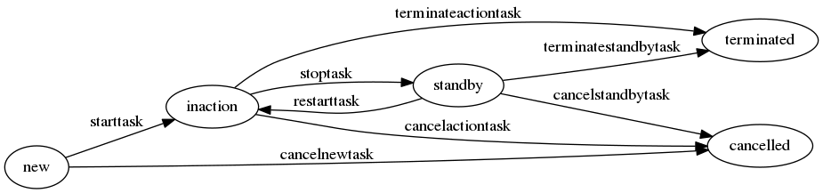

moto
Table of Contents
1 Введение
Создаем самый посещаемый ресурс по мототематике. Сначала в С-Пб, потом в Москве.
Задачи:
- Определить интересы целевой аудитории. Клубы, тусовки, небходимые сервисы
- Определить круг зарубежных ресурсов, с которых брать идеи
- Выйти на рекламодателей, определить возможную окупаемость и схемы монетизации
Отличия от других:
- Более демократичный ресурс чем мотобратан:
- модератор подписывается под баном
- можно баны обсуждать
- сообщество может отменить бан модератора!
- Больше возможностей:
- поиск людей (ник, имя, район)
- разделы общения:
- по районам - для совместных прохватов (север, юг, пригороды)
- кварталы по классу мотоциклов (спорбайки, эндуро, etc)
- новости, которые сегментирутся по кварталам.
- пользователь может подписаться на разные кварталы и сформировать ленту, а также на разных людей (иерархические теги)
- прохваты - календарь
- карта с маршрутами прохватов
- статистика дтп как на motositizen
- отметить темы как прочитанные
- личные сообщения сделать удобнее чем на мотобратане и с поиском
- Больше полезной информации о мотоциклах
- раздел с мануалами и поиском по мотоциклу
- раздел с поиском по запчастям
- раздел с "у кого спросить" по мотоциклу
- мотосервисы и отзывы о ремонтах
- Никакой надоедливой рекламы (баннеров)
- Разделы
- УСЛУГИ - в этом разделе пользователь должен увидеть, где какие гаражи можно арендовать, в каких мастерских можно починиться, где есть мотошколы, где зарегистрироваться или застраховаться и пр - то есть здесь надо собрать инфу обо всех услугах, которые могут пригодиться.
- ЗАПЧАСТИ - поиск запчастей как у частных так и по магазинам, отзывы с инфой где покупал эту запчасть https://www.louis.de/rubrik/motorradbekleidung-motorradhelme/1
- ПРОХВАТЫ
- БЛОГИ - сортировка новостей для удобства поиска (мало ли людям пригодится). Сортировать по источникам, например - СМИ (то есть газеты и проч известные сми), блоги, новости сайта.
- УГОНЫ. Совместные рейды против угонов с применением gps-locate
- ДТП
- ГАЛЕРЕЯ - как у харлея или тут http://www.dorna.com/dornacontents_wsbk.html
- Гонки
- Отчеты о путешествиях
- Брендованные страницы сервисов http://www.cobrausa.com/ https://www.louis.de/katalog/themen-welten/meine-werkstatt
- Статьи с кармой как на байкпосте
Раздел для начинающих мотоциклистов
- Где учиться (мотошколы)
- Как выбрать мотоцикл, экип (магазины)
- Лайфхаки
- Безопасное вождение
Разбивку по стажу можно легко сделать из данных по стажу и типу мото в гараже
- Мото-дети (кроссовая подготовка, тренера, ШКМГ)
- Мото-мастерские - узнать что ремонтируют и что заказывают
- Мотовыставки и мотофестивали
- Трансляции с мотобратана, байкпоста и других сайтов, например ручп, в части мотоциклистов
- Специальные тестовые программы устройств для пользователей сайтов
- Места для безопасной парковки мота.
- Мотофлирт с функционалом полноценного сайта знакомств.
- Комментарии ко всему
- Продажа мотоциклов с функицоналом авто.ру и синдикацией с авто.ру и авито
- Юридическая помощь
- Отслеживание камер и радаров (за карму) (по карте)
- Карма
- отслеживать за что
- привлекать людей к оценке сколько дать за какое действие
- Связь с админами
- Система исправления орфографических (и не только) ошибок сначала для себя, а при подтверждении автором - и для других. С наглядностью диффа.
- Заметки по юзерам: http://vk.com/ekaterina.klochkova На всякий пожарный. Ближайшую неделю меня не будет вконтактике. У меня есть телефон: +79218857023 и почта: kait.klochkova@gmail.com.
- Поиск друзей с кем покататься Вводишь время, место и радиус, система находит друзей, и пишешь им - давай катать!
- Мототур "по бабам"
2 Стартап
Одоната идея. жизнь на пракачку, или как из омеги заальфаться для задротов. приложение на мобилку, которое раздает тебе очки за то что ты делаешь что-то душеспасительное и полезное. связано с форсквэром, считывалкой штрихкодов и прочей поебней.
ты логгишься туда и тебе рисуют аватарку тупого дрыща, нихуя не умеющего в этой жизни. у тебя 0 уровень.
ты получаешь очки, когда отслеживалка находит тебя в фитнес-клубах, центрах обучения и т.д. если ты там появляешься регулярно - очки удваиваются, пока не поломаешь цепь регулярности. то есть 20 посещений качалки дают 20 очков, если ходить как поппало, или 40, если не ломать периодичность 2 раза в неделю. небольшое количество баллов получаешь, когда покупаешь полезную жратву или развивающие книги, гантели. спорт товары, оплачиваешь услуги обучения, медицинские услуги и проч. для этого используется сканер штрихкодоов
растет уровень - растет необходимое количество баллов для достижения следующего. более ценные баллы можно получить, предоставляя приложению докозательства успехов - сертификаты об окончании курсов на курсере, сдача нормативов по бегу или прочей хуйне, которую отмеряет шагометр, встроенный в мобилку, чекины с других концов планеты.
задроты - они задроты везде, и зарабатывая баллы будут прокачивать свою жизнь.
идея для коммерциализации - заключать контракты с магазинами спорт товаров/ресторанами здорового питания/ центрами обучения, что бы при оплате их услуг получать бонусные баллы
Одоната по пути побочные квестики - прочитай вот эту книжку, ответь на вопросики по содержанию, получи полюсик сходи в такой музейчик, отметься - держи еще один плюсик. на этой неделе пройдет вот такое мероприятие, сходи, получи супер бонус, а мы денег за рекламу от организаторов ага. ток что бы этим заняться мне надо либо с работы уволиться либо бросить спать. я чо эт хуйню то придумала. я узнада что мой клуб очки начисляет за посещения. и обнаружила, что как только об этом узнала. частота моих посещений возрасла до 3х раз в неделю. мне эти балы не дают нихуя. не даж так. НИХУЯШЕНЬКИ но воспитанное годами мышление задрота не позволяет упустить возможность заработать баллы
есть проблема, связанная с тем, что человеки - в общем-то ленивые скоты. а задроты еще и хитрые ленивые скоты и нужна система контроля.
поэтому эту хуйню надо строить изначально с привязкой к кому-нибудь. идеальный вариант - начать с физического состояния задрота, т.к. это самая болезненная тема раз, измеряется проще всего два. берем в одну руку сеть качалок - тот же задрипанный алекс фитнес и привязываем всю эту лабуду туда. менеджменту говорим, что ща продажи вырастут так, что охуеете а так же у вас будет мощная обратная связь с клиентурой. чувак не только чекинится в зале, но так же имеет возможность раз в месяц подойти к тренеру и сказать "смари как я умею". тренер проверяет прогресс и говорит - молодца чувак. после чего на своей мобилке жамкает кнопулю, которая генерит qr-код. чувак считывает своей мобилой qr-код и переходит на след уровень. можно привязать персональные тренировки к этой лабуде. тренра жеж все равно дают роуд мап какй-то мол по понедельникам ты делаешь два притопа три прихлопа, во вторник дрочишь хуй, в четверг работаешь вот с такими мышцами вот такими упражнениями по столько подходов. для чувака который первый раз пришел в зал все это - китайская грамота и вылетает из ушей моментально (я вот в полном ахуе например была) - а тут тренер говорит, мол выполняешь программу с номером 15, вот те код - чувак его считывает мобилкой и имеет нормальное рассписание что и когда ему делать. и задно баллы получает.
делает это вместе с тренером - получает от тренера код, баллы удваиваются, в зале растут продажи персональных тренировок.
через нное количество времени получаем сеть посетителей сети клубов, которые радостно друг другу шлют фотаньки с бицухами и дают оценки тренерам (как бонус)
и тогда топаем в сеть школ, ну например иностранных языков. та же лабуда. получаешь баллы за то что приходишь на уроки, после экзамена и перехода на новый уровень владения языком получаешь от препода код. + мильен баллов и бэйджик. школам говорим - ща к вам прибежит клиентура в 100500 чуваков из качалок. потом туда же постепенно добавляем другие напрваления. автошколы, университеты, курсы повышения квалификации, оздоровительные программы и проч.
от всех организаций-участников получаем обратную связь по поводу того, как чувачки наши развиваются. каждый новый участник получает прирост клиентуры и охуенную рекламную площадку. участники игрули получают скидку на услугу компаний-участников. мы сидим и стрижем купоны. вин-вин
так как все участники реальны и действительно ходят во все эти хуйни, то мы будем единственной площадкой, которая может доказать, что отзывы, складирующиеся у нас (а люди ж те же голуби, им везде срать надо своим мнением) на 100% реальны, а не написаны пиарщиками или роботами
соответственно к нам начинают прибегать посторонние люди что бы получать объективную оченку мест в которые они хотят вписаться
3 Что улучшать
- Типы для полей state нужно задавать как перечисления
- Добавить AJAX и Comet
- Автоматизированная генерация интерфейса для просмотра и редактирования сущностей
- Забираем пользователей с других ресурсов
- Очищалка базы для каждого модуля должна лежать в модуле
- И сущности тоже туда переложить
- Адаптивный дизайн
4 Сущности
Соберем все сущности и автоматы в один файл src/entityes.lisp
4.1 Функции для кодогенерации сущностей
Эти функции будут кодогенерировать сущности и автоматы из таблиц с наименованием и типами полей внутри этого файла.
Чтобы emacs не запрашивал подтверждение на каждое исполнение кода, установим эту настройку:
(setq org-confirm-babel-evaluate nil)
Функция outlist нужна для форматирования лисповых списков при генерации в
s-выражения для entity:
(defun outlist (lst ident fn) (let ((outlist-result '()) (first (car lst)) (middle (butlast (cdr lst))) (last (car (last lst)))) (cond ((equal 0 (length lst)) (push (concat ident "()") outlist-result)) ((equal 1 (length lst)) (push (funcall fn (concat ident "(%s)") first) outlist-result)) ((< 1 (length lst)) (push (funcall fn (concat ident "(%s") first) outlist-result) (mapcar #'(lambda (x) (push (funcall fn (concat "\n" ident " %s") x) outlist-result)) middle) (push (funcall fn (concat "\n" ident " %s)") last) outlist-result))) outlist-result))
Начнем с генерации кода из таблицы полей:
Это старая версия gen_fields:
(defun gen-fields (rows) (let ((result)) (push "\n" result) (push (format " (%s\n" (butlast (car rows))) result) (mapcar #'(lambda (x) (push (format " %s\n" (butlast x)) result)) (butlast (cdr rows))) (push (format " %s)" (butlast (car (last rows)))) result) (mapconcat 'identity (reverse result) "")))
А теперь новая версия:
При генерации полей из таблиц описания сущностей некоторые поля имеют имя, но не имеют типа. Это нормально, т.к. они нужны для создания полей one-to-many при генерации поля для ORM. Такие поля мы выводим без указания типа.
(defun gen-fields (rows) (let ((fields) (primary) (foreign) (unique)) (mapcar #'(lambda (val) (unless (string= "" (nth 3 val)) (mapcar #'(lambda (addon-key) (let (meta-key) (if (listp addon-key) (setq meta-key (car addon-key)) (setq meta-key addon-key)) (cond ((string= meta-key 'primary) (push (car val) primary)) ((string= meta-key 'one-to-many) (push (list 'one-to-many (car val) (nth 1 addon-key)) foreign)) ((string= meta-key 'many-to-one) (push (list 'many-to-one (car val) (nth 1 addon-key)) foreign)) ((string= meta-key 'unique) (push (car val) unique))))) (read (nth 3 val))))) rows) (values (outlist rows " " (function (lambda (tpl val) (if (not (string= "" (nth 1 val))) (if (string= "" (nth 2 val)) (format tpl (subseq val 0 2)) (format tpl (subseq val 0 3))) (format tpl (list (car val))))))) primary (outlist (reverse foreign) " " (function (lambda (tpl val) (format tpl val)))) unique)))
Теперь напишем код, который генерирует код для состояний конечного автомата:
Это его старая версия:
(defun gen-states (rows) (let ((result) (hash (make-hash-table :test #'equal)) (states)) (dolist (elt rows nil) (puthash (cadr elt) nil hash) (puthash (cadr (cdr elt)) nil hash)) (maphash (lambda (k v) (push k states)) hash) (push "\n" result) (push " (" result) (dolist (elt (butlast states)) (push (format ":%s " elt) result)) (push (format ":%s)" (car (last states))) result) (mapconcat 'identity (reverse result) "")))
А это - новая:
(defun gen-states (rows) (let ((result) (hash (make-hash-table :test #'equal)) (states)) (dolist (elt rows nil) (puthash (cadr elt) nil hash) (puthash (cadr (cdr elt)) nil hash)) (maphash (lambda (k v) (push k states)) hash) (push "\n" result) (push " (" result) (dolist (elt (butlast states)) (push (format ":%s " elt) result)) (push (format ":%s)" (car (last states))) result) (mapconcat 'identity (reverse result) "")))
И добавим к этом генератор действий - т.е. переходов между состояниями:
Это старая версия:
(defun gen-actions (rows) (let ((result)) (push "\n" result) (let ((x (car rows))) (push (format " ((:%s :%s :%s)" (cadr x) (cadr (cdr x)) (car x)) result)) (if (equal 1 (length rows)) (push ")" result) (progn (push "\n" result) (mapcar #'(lambda (x) (push (format " (:%s :%s :%s)\n" (cadr x) (cadr (cdr x)) (car x)) result)) (cdr (butlast rows))) (let ((x (car (last rows)))) (push (format " (:%s :%s :%s))" (cadr x) (cadr (cdr x)) (car x)) result)))) (mapconcat 'identity (reverse result) "")))
Это новая:
(defun gen-actions (rows) (let ((result)) (push "\n" result) (let ((x (car rows))) (push (format " ((:%s :%s :%s)" (cadr x) (cadr (cdr x)) (car x)) result)) (if (equal 1 (length rows)) (push ")" result) (progn (push "\n" result) (mapcar #'(lambda (x) (push (format " (:%s :%s :%s)\n" (cadr x) (cadr (cdr x)) (car x)) result)) (cdr (butlast rows))) (let ((x (car (last rows)))) (push (format " (:%s :%s :%s))" (cadr x) (cadr (cdr x)) (car x)) result)))) (mapconcat 'identity (reverse result) "")))
Плюс к этому нам нужны функции, которые меняют стиль написания идентификаторов:
(defun split-name (s) (split-string (let ((case-fold-search nil)) (downcase (replace-regexp-in-string "\\([a-z]\\)\\([A-Z]\\)" "\\1 \\2" s))) "[^A-Za-z0-9]+")) (defun camelcase (s) (mapconcat 'capitalize (split-name s) "")) (defun underscore (s) (mapconcat 'downcase (split-name s) "_")) (defun dasherize (s) (mapconcat 'downcase (split-name s) "-")) (defun colonize (s) (mapconcat 'capitalize (split-name s) "::")) (defun camelscore (s) (cond ((string-match-p "\\(?:[a-z]+_\\)+[a-z]+" s)(dasherize s)) ((string-match-p "\\(?:[a-z]+-\\)+[a-z]+" s)(camelcase s)) ((string-match-p "\\(?:[A-Z][a-z]+\\)+$" s)(colonize s)) (t(underscore s)) )) (defun camelscore-word-at-point () (interactive) (let* ((case-fold-search nil) (beg (and (skip-chars-backward "[:alnum:]:_-") (point))) (end (and (skip-chars-forward "[:alnum:]:_-") (point))) (txt (buffer-substring beg end)) (cml (camelscore txt)) ) (if cml (progn (delete-region beg end) (insert cml)))))
Аналогичным образом напишем генератор, который собирает POST-запрос из таблицы с двумя столбцами, в первом из которых лежит ключ, а во втором - значение. Если значение начинается с символа двоеточия - то мы отправляем его "как есть" (но без двоеточия), а противном случае мы считаем его accessor-ом и кодируем в url-encode.
(defun gen-post (rows var) (flet ((rval (val var) (let ((match-result (string-match ":" val))) (if (and (not (null match-result)) (= 0 (string-match ":" val))) (concat "\"" (substring val 1) "\"") (format ",(drakma:url-encode (%s %s) :utf-8)" val var))))) (let ((result)) (push (format "`((\"%s\" . %s)" (caar rows) (rval (cadar rows) var) var) result) (mapcar #'(lambda (x) (push (format "\n (\"%s\" . %s)" (car x) (rval (cadr x) var) var) result)) (butlast (cdr rows))) (push (format "\n (\"%s\" . %s))" (caar (last rows)) (rval (cadar (last rows)) var) var) result) (mapconcat 'identity (reverse result) ""))))
Соберем все это в один файл, чтобы загружать перед кодогенерацией проекта:
;; <<copyright>> <<gen_org_confirm>> <<outlist>> <<change_case>> <<gen_fields>> <<gen_states>> <<gen_actions>> <<define-entity>> <<with-entity>> <<gen_post>>
И загрузим его:
(load-file "generators.el")
Теперь у нас есть все необходимое, чтобы написать вызываемые при tangle генераторы сущностей и автоматов.
При создании сущностей и автоматов мы формируем вызов define-entity
или define-automat, предполагая, что параметры передаются в таком
порядке:
- Имя сущности/автомата
- Описание
- Список полей
- Список primary-keys
- Список внешних ключей
- Список уникальных ключей
Затем, для автоматов передаются еще несколько параметров:
- Список всех состояний автомата
- Список действий при допустимых переходах
Это старый вариант генератора сущностей, который не учитывает реляционные связи:
А это новый вариант генератора сущностей:
Это старый вариант генератора автоматов, который не учитывает реляционные связи:
А это новый вариант генератора сущностей:
4.2 Функции для работы с lisp-сущностями
Главный макрос, разворачивающий промежуточное представление сущности в набор property list с удобным доступом к каждому полю
(defmacro define-entity (name desc slot-descriptions primary foreign unique &rest class-options) (let ((fields)) ;; full initial hash with pair 'field-name' => 'slot-description' (mapcar #'(lambda(slot) (let ((base-data) (name (car (subseq slot 0 1))) (common-type) (default) (nullable) (type) (type-attrs) (attrs)) (if (< 1 (length slot)) (setq common-type (car (subseq slot 1 2)))) (if (< 2 (length slot)) (setq default (car (subseq slot 2 3)))) ;; преобразование типа из списка (when (and (listp common-type) (string= "or" (car common-type))) (setq type (car (last common-type))) (setq type-attrs (cdr (last common-type))) (setq nullable t)) (when (and (listp common-type) (not (string= "or" (car common-type)))) (setq type (car common-type)) (setq type-attrs (cdr common-type))) (if (listp common-type) (setq type (car common-type)) (setq type common-type)) (cond ((string= "numeric" type) (setq attrs (plist-put attrs :precision (nth 0 type-attrs))) (setq attrs (plist-put attrs :scale (nth 1 type-attrs)))) ((string= "string" type) (setq attrs (plist-put attrs :max (nth 0 type-attrs))))) (setq fields (plist-put fields (car slot) (list :name name :type type :attrs attrs :default default :nullable nullable))))) slot-descriptions) ;; let's parse type in more usable format ;;primary (mapcar #'(lambda (primary-field) (let ((field-value (plist-get fields primary-field))) (when field-value (plist-put fields primary-field (plist-put field-value :primary t))))) primary) ;;foreign (mapcar #'(lambda (foreign) (let ((foreign-field (nth 1 foreign)) (field-value (plist-get fields (nth 1 foreign)))) (when field-value (plist-put fields foreign-field (plist-put field-value (intern (concat ":" (symbol-name (nth 0 foreign)))) (nth 2 foreign))))) ) foreign) ;;unique (mapcar #'(lambda (unique-field) (let ((field-value (plist-get fields unique-field))) (when field-value (plist-put fields unique-field (plist-put field-value :unique t))))) unique) ;; plist to normal list (setq fields (cl-loop for (key value) on fields by 'cddr collect value )) `',fields)) ;; ;; пример ;; (define-entity message "Сущность сообщений" ;; ((id serial) ;; (type integer) ;; (author integer) ;; (target_user integer) ;; (target_holder integer) ;; (datetime datetime) ;; (subject (string 127)) ;; (text text) ;; (is_read boolean)) ;; (id) ;; ((many-to-one type (message-type id)) ;; (many-to-one author (user id)) ;; (many-to-one target_user (user id)) ;; (many-to-one target_holder (holder id))) ;; ()) (defmacro define-automat (name desc slot-descriptions primary foreign unique &rest class-options) (let ((fields)) ;; full initial hash with pair 'field-name' => 'slot-description' (mapcar #'(lambda(slot) (let ((base-data) (name (car (subseq slot 0 1))) (common-type) (default) (nullable) (type) (type-attrs) (attrs)) (if (< 1 (length slot)) (setq common-type (car (subseq slot 1 2)))) (if (< 2 (length slot)) (setq default (car (subseq slot 2 3)))) ;; преобразование типа из списка (when (and (listp common-type) (string= "or" (car common-type))) (setq type (car (last common-type))) (setq type-attrs (cdr (last common-type))) (setq nullable t)) (when (and (listp common-type) (not (string= "or" (car common-type)))) (setq type (car common-type)) (setq type-attrs (cdr common-type))) (if (listp common-type) (setq type (car common-type)) (setq type common-type)) (cond ((string= "numeric" type) (setq attrs (plist-put attrs :precision (nth 0 type-attrs))) (setq attrs (plist-put attrs :scale (nth 1 type-attrs)))) ((string= "string" type) (setq attrs (plist-put attrs :max (nth 0 type-attrs))))) (setq fields (plist-put fields (car slot) (list :name name :type type :attrs attrs :default default :nullable nullable))))) slot-descriptions) ;; let's parse type in more usable format ;;primary (mapcar #'(lambda (primary-field) (let ((field-value (plist-get fields primary-field))) (when field-value (plist-put fields primary-field (plist-put field-value :primary t))))) primary) ;;foreign (mapcar #'(lambda (foreign) (let ((foreign-field (nth 1 foreign)) (field-value (plist-get fields (nth 1 foreign)))) (when field-value (plist-put fields foreign-field (plist-put field-value (intern (concat ":" (symbol-name (nth 0 foreign)))) (nth 2 foreign))))) ) foreign) ;;unique (mapcar #'(lambda (unique-field) (let ((field-value (plist-get fields unique-field))) (when field-value (plist-put fields unique-field (plist-put field-value :unique t))))) unique) ;; plist to normal list (setq fields (cl-loop for (key value) on fields by 'cddr collect value )) `',fields))
Теперь необходимо определить функцию, что будет вытягивать сгенерированное представление сущности из ее файла и отдавать запрошенные дополнительным параметром поля. Если список полей отсутствует или пустой, будет возвращен полный список полей сущности.
(defmacro with-entity (entity &optional fields) (let ((entity-data) (result-fields) (need-fields)) ;; достаем сущность из сгенерированного файла (setq entity-data (eval (read (with-temp-buffer (insert-file-contents (concat "./src/" (symbol-name entity) "-entity.lisp")) (buffer-string))))) ;; фильтр по запрошенным полям (when fields (mapcar #'(lambda (field) (if (listp field) (setq need-fields (plist-put need-fields (car field) (cdr field))) (setq need-fields (plist-put need-fields field nil)))) fields)) (if need-fields (setq result-fields (apply #'append (mapcar #'(lambda (entity-field) (setq field-name (plist-get entity-field :name)) (if (not (plist-member need-fields field-name)) nil (setq result-field (if (plist-get need-fields field-name) (append entity-field (plist-get need-fields field-name)) entity-field)) (setq result-field (plist-put result-field :entity entity)) (list result-field))) entity-data))) ;;[TODO:bgg] этот блок можно переписать лучше, избежав дублирования кода (setq result-fields (apply #'append (mapcar #'(lambda (entity-field) (setq result-field (plist-put entity-field :entity entity)) (list result-field)) entity-data)))) `',result-fields)) ;; ;; пример для message-entity без списка необходимых полей ;; (message "%s" ;; (with-entity message)) ;; ;; пример для message-entity со списком необходимых полей ;; (message "%s" ;; (with-entity message ;; (id target_user target_holder))) ;; (print ;; (pp ;; (macroexpand-all ;; '(with-entity message ;; (id ;; target_user ;; target_holder ;; (text :label "Your message"))))))
4.3 События
События протоколируют все что происходит в системе. Каждое создание сущности, каждое изменение состояния автомата регистрируется здесь. Роботы используют эти события для своей работы. Также информация о событиях попадает на главную страницу.
Событие является простой сущностью и не имеет состояния.
| field name | field type | default | meta | note |
|---|---|---|---|---|
| id | serial | (primary) | идентификатор | |
| name | (or db-null varchar) | имя события | ||
| tag | (or db-null varchar) | тег события | ||
| msg | (or db-null varchar) | сообщение или описание | ||
| author-id | (or db-null varchar) | инициатор события | ||
| ts-create | bigint | время события |
Теперь сгенерируем код:
4.4 Роли (role)
Роли определяют набор сценариев, которые пользователь выполняет на сайте. Функционал, который выполняют сценарии запрашивает разрешение на выполнение действий, которое опирается на роль, присвоенную пользователю. Пользователь может иметь только одну роль или не иметь ее вовсе.
Роль является простой сущностью и не имеет состояния.
| field name | field type | default | meta | note |
|---|---|---|---|---|
| id | serial | (primary) | идентификатор | |
| name | varchar | имя | ||
| descr | (or db-null varchar) | описание |
Теперь сгенерируем код и cоздадим необходимые роли:
4.5 Пользователи (user)
Для начала надо определиться, какие данные мы собираемся хранить о пользователях, и
какого типа будут эти данные. Типы данных задаем в формате Postmodern чтобы потом
сохранить данные в PostgreSQL
| field name | field type | default | meta | note |
|---|---|---|---|---|
| id | serial | (primary) | идентификатор | |
| name | varchar | никнейм пользователя | ||
| password | varchar | пароль | ||
| varchar | емейл | |||
| firstname | (or db-null varchar) | имя | ||
| lastname | (or db-null varchar) | фамилия | ||
| phone | (or db-null varchar) | телефон | ||
| mobilephone | (or db-null varchar) | мобильный телефон | ||
| sex | (or db-null varchar) | пол | ||
| birth-day | (or db-null varchar) | день рождения | ||
| birth-month | (or db-null varchar) | месяц рождения | ||
| birth-year | (or db-null varchar) | год рождения | ||
| ts-create | bigint | время регистрации | ||
| ts-last | bigint | время последнего действия | ||
| role-id | (or db-null integer) | идентификатор роли |
В нашей системе пользователь может существовать (или не существовать) в одном из нескольких состояний:
- Когда пользователь еще не зарегистрирован на сайте мы можем считать его
незарегистрированным (
unregistred) - После регистрации он автоматически становится залогиненным (
logged) - Пользователь может покинуть сайт и перейти в состояние
unlogged - Пользователь может забыть свой пароль, тогда мы должны выслать ему ссылку для
восстановления пароля (
sended) - И наконец, после восстановления пароля пользователь вновь становится залогиненным
(
logged)
Все эти переходы и состояния сведем в единую таблицу:
| action | from | to |
|---|---|---|
| registration | unregistred | logged |
| unregistration | logged | unregistred |
| enter | unlogged | logged |
| leave | logged | unlogged |
| forgot | unlogged | sended |
| remember | sended | logged |
Теперь мы можем полностью описать поведение пользователя как конечный автомат:

Для того чтобы избежать дублирования ников и связанной с этим
ситуации, когда один пользователь выдает себя за другого, следует
определить констрейнт на уникальность поля name и email
Так как в системе все пользователи тесно связаны с ролями, следует определить внешний ключ на таблицу ролей:
Теперь сгенерируем код и определим функции, которые вызываются на
переходах из одного состояния в другое. Также установим ограничение
на колонку name чтобы избежать дублирования ников.
4.6 Группы (group, user2group)
Группы пользователей определяют набор операций, которые пользователь может выполнять над объектами системы. В отличие от ролей, один пользователь может входить в несколько групп или не входить ни в одну из них.
Группа является простой сущностью и не имеет состояния.
| field name | field type | default | meta | note |
|---|---|---|---|---|
| id | serial | (primary) | идентификатор | |
| name | varchar | имя группы | ||
| descr | (or db-null varchar) | описание группы | ||
| ts-create | bigint | время создания группы | ||
| author-id | (or db-null integer) | идентификатор создателя группы |
Сгенерируем код и создадим необходимые группы:
Теперь создадим таблицу связи, которая свяжет пользователей и группы:
| field name | field type | default | meta | note |
|---|---|---|---|---|
| id | serial | (primary) | идентификатор | |
| user-id | integer | идентификатор пользователя | ||
| group-id | integer | идентификатор группы |
Чтобы пары в таблице связи удалялись при удалении связанных групп и пользователей следует установить on-delete foreigh keys.
И сгенерируем код для нее:
4.7 Сообщения (msg)
О сообщениях мы знаем только от кого они посылаются, кому и собственно текст сообщения. Его наверно не стоит ограничивать. По идее как посылающий, так и принимающий может удалить сообщение (пометить как удаленное), для этого мы используем отдельные флаги.
| field name | field type | default | meta | note |
|---|---|---|---|---|
| id | serial | (primary) | идентификатор | |
| snd-id | integer | пользователь, который послал сообщение | ||
| rcv-id | integer | пользователь, который получает сообщение | ||
| msg | varchar | сообщение | ||
| ts-create | bigint | время создания | ||
| ts-delivery | bigint | время доставки |
Еще сообщение может быть доставлено или недоставлено.
| action | from | to |
|---|---|---|
| delivery | undelivered | delivered |
Теперь сгенерируем код и определим функции, которые вызываются на переходах
4.8 Задачи (task)
| field name | field type | default | meta | note |
|---|---|---|---|---|
| id | serial | (primary) | идентификатор | |
| name | varchar | название | ||
| blockdata | varchar | суть задачи или данные | ||
| owner-id | (or db-null integer) | идентификатор владельца | ||
| exec-id | (or db-null integer) | идентификатор исполнителя | ||
| ts-create | bigint | время регистрации |
В нашей системе задача может существовать в одном из нескольких состояний:
- Создана, но еще ни разу не исполнялась (
new). - Исполняется в данный момент (
inaction) - Была исполнена но еще не завершена, возможно потребуется исполнять
еще раз или по расписанию (
standby) - Отменена (
cancelled) - Завершена (
terminated)
Все эти переходы и состояния сведем в единую таблицу:
| action | from | to |
|---|---|---|
| starttask | new | inaction |
| stoptask | inaction | standby |
| restarttask | standby | inaction |
| cancelnewtask | new | cancelled |
| cancelactiontask | inaction | cancelled |
| cancelstandbytask | standby | cancelled |
| terminateactiontask | inaction | terminated |
| terminatestandbytask | standby | terminated |
Теперь мы можем полностью описать поведение пользователя как конечный автомат:

Для того чтобы избежать дублирования задач, следует определить
констрейнт на уникальность поля name
Так как в системе все пользователи тесно связаны с задачами, следует определить внешний ключ на таблицу пользователей так, чтобы при удалении пользователей-владельцев задач удалялись и их задачи.
Теперь сгенерируем код и определим функции, которые вызываются на
переходах из одного состояния в другое. Также установим ограничение
на колонку name чтобы избежать дублирования ников.
4.9 Очереди (que, quelt)
Очереди используются для фолловинга и прочей подписки на обновления.
Нам нужна некоторая инфраструктура чтобы абстрагироваться от операций управления очередями, подписчиками и посылки сообщений. Потом ее можно будет изменить для поддержки RabbitMQ, Mbus или ZMQ или даже использовать все их одновременно для разных целей.
Очередь является простой сущностью и не имеет состояния.
| field name | field type | default | meta | note |
|---|---|---|---|---|
| id | serial | (primary) | идентификатор | |
| name | varchar | имя очереди |
Нам понадобится сущность элемента очереди, назовем его quelt. Элемент очереди является
простой сущностью и не имеет состояния.
| field name | field type | default | meta | note |
|---|---|---|---|---|
| id | serial | (primary) | идентификатор | |
| que-id | integer | идентификатор очереди | ||
| text | varchar | содержимое |
Сгенерируем код и создадим необходимые очереди:
4.10 Аватары (avatar)
Пользователи имеют неопределенное кол-во аватарок, разного размера, для которых мы осуществляем хранение в оригинальном размере, масштабирование и хранение отмасштабированных превьюшек.
| field name | field type | default | meta | note |
|---|---|---|---|---|
| id | serial | (primary) | идентификатор | |
| user-id | integer | идентификатор пользователя | ||
| origin | varchar | путь к файлу оригинального размера | ||
| ts-create | bigint | время создания |
Одна из автарок может быть активной в данный момент.
| action | from | to |
|---|---|---|
| avatar-off | active | inactive |
| avatar-on | inactive | active |
Теперь сгенерируем код и определим функции, которые вызываются на переходах
Когда какому-нибудь коду необходимо отобразить аватар он может получить путь к аватару, передав идентификатор пользователя и необходимый размер:
В будущем этот код будет генерироваться из исполняемой спецификации размеров и путей к аватаркам
5 События
Мы используем события, чтобы отслеживать и логгировать изменения в системе, которые происходят в ответ на действия внешних сил.
;;;; <<copyright>> ;;;; events.lisp (in-package #:moto)
6 Модули
6.1 Cущности, автоматы и их тесты
Опишем из чего состоит модуль, это описание станет частью asd-файла:
(:module "entity" :serial t :pathname "mod" :components ((:file "entity")))
6.2 Авторизация
Опишем из чего состоит модуль, это описание станет частью asd-файла:
(:module "auth" :serial t :pathname "mod/auth" :components ((:static-file "auth-tpl.htm") (:file "auth")))
Как пользователь, я хочу иметь возможность ввести логин и пароль чтобы получить доступ к закрытому от неавторизованных пользователей функционалу.
6.3 Очереди
Опишем из чего состоит модуль, это описание станет частью asd-файла:
(:module "que" :serial t :pathname "mod/que" :components ((:file "que")))
6.4 Сообщения
Опишем из чего состоит модуль, это описание станет частью asd-файла:
(:module "msg" :serial t :pathname "mod/msg" :components ((:file "msg")))
6.5 HeadHunter
(:module "hh" :serial t :pathname "mod/hh" :components ((:file "m-util") (:file "f-util") (:file "util") (:file "globals") (:file "entityes") (:file "hh") (:file "vacancy") (:file "resume") (:file "response") (:file "iface")))
6.6 Trend
Опишем из чего состоит модуль, это описание станет частью asd-файла:
;; (:module "trend" ;; :serial t ;; :pathname "mod/trend" ;; :components ((:static-file "trend-tpl.htm") ;; (:file "trend-prepare") ;; (:file "entityes") ;; (:file "loader") ;; (:file "trend") ;; (:file "iface")))
6.7 Граббер пользователей мотобратана
Опишем из чего состоит модуль, это описание станет частью asd-файла:
;; (:module "bratan" ;; :serial t ;; :pathname "mod/bratan" ;; :components ((:file "bratan")))
6.8 TODO Граббер тем мотобратана
6.9 TODO Посты
6.10 TODO Багзилла
6.11 TODO Шаринг
7 Сборка
7.1 Утилиты
;;;; <<copyright>> ;;;; util.lisp (in-package #:moto) ;; Превращает инициализированные поля объекта в plist (defun get-obj-data (obj) (let ((class (find-class (type-of obj))) (result)) (loop :for slot :in (closer-mop:class-direct-slots class) :collect (let ((slot-name (closer-mop:slot-definition-name slot))) (when (slot-boundp obj slot-name) (setf result (append result (list (intern (symbol-name slot-name) :keyword) (funcall slot-name obj))))))) result)) ;; Assembly WHERE clause (defun make-clause-list (glob-rel rel args) (append (list glob-rel) (loop :for i :in args :when (and (symbolp i) (getf args i) (not (symbolp (getf args i)))) :collect (list rel i (getf args i))))) ;; Макросы для корректного вывода ошибок (defmacro bprint (var) `(subseq (with-output-to-string (*standard-output*) (pprint ,var)) 1)) (defmacro err (var) `(error (format nil "ERR:[~A]" (bprint ,var)))) ;; Отладочный вывод (defparameter *dbg-enable* t) (defparameter *dbg-indent* 1) (defun dbgout (out) (when *dbg-enable* (format t (format nil "~~%~~~AT~~A" *dbg-indent*) out))) (defmacro dbg (frmt &rest params) `(dbgout (format nil ,frmt ,@params))) ;; (macroexpand-1 '(dbg "~A~A~{~A~^,~}" "zzz" "34234" '(1 2 3 4))) (defun anything-to-keyword (item) (intern (string-upcase (format nil "~a" item)) :keyword)) (defun alist-to-plist (alist) (if (not (equal (type-of alist) 'cons)) alist ;;else (loop :for (key . value) :in alist :nconc (list (anything-to-keyword key) value)))) ;; Враппер управляет сесииями и выводит все в основной (root-овый) шаблон ;; Если необходимо вывести ajax-данные, использует специальный тип ошибки (define-condition ajax (error) ((output :initarg :output :reader output))) (defmacro with-wrapper (&body body) `(progn (hunchentoot:start-session) (let* ((*current-user* (hunchentoot:session-value 'current-user)) (retval)) (declare (special *current-user*)) (handler-case (let ((output (with-output-to-string (*standard-output*) (setf retval ,@body)))) (tpl:louis (list :title "" :header (tpl:header (list :login (head-login-block) :search (ps-html ((:form :action "/hh/search" :method "get" :novalidate "" :name "article-search" :class "header-search" :id="article-search") ((:fieldset) ((:legend :class "hidden") "search") ((:div :class "input-container hide-label") ((:label :for "header-search-q") "Поиск вакансий и фирм") ((:input :name "q" :id "header-search-q" :class "input-text form-element header-search__input" :maxlength "50" :required "required" :autocomplete "off" :value (aif (get-parameter "q") it "") :type "text"))) ((:button :type "submit" :class "button button--header-search" :value "") ((:span :class "button__icon sprite") "Search"))))))) :content retval :footer (tpl:footer (list :dbg (format nil "<pre>~A</pre>" output)))))) (ajax (ajax) (output ajax)))))) ;; Для того чтобы генерировать и выводить элементы форм, напишем хелперы: ;; (defun input (type &key name value other) ;; (format nil "~%<input type=\"~A\"~A~A~A/>" type ;; (if name (format nil " name=\"~A\"" name) "") ;; (if value (format nil " value=\"~A\"" value) "") ;; (if other (format nil " ~A" other) ""))) ;; ;; (input "text" :name "zzz" :value 111) ;; ;; (input "submit" :name "submit-btn" :value "send") ;; (defmacro select ((name &optional attrs) &body options) ;; `(format nil "~%<select name=\"~A\"~A>~{~%~A~}~%</select>" ;; ,name ;; (aif ,attrs (format nil " ~A" it) "") ;; (loop :for (name value selected) :in ,@options :collect ;; (format nil "<option value=\"~A\"~A>~A</option>" ;; value ;; (if selected (format nil " ~A" selected) "") ;; name)))) ;; (defun fld (name &optional (value "")) ;; (input "text" :name name :value value)) ;; (defun btn (name &optional (value "")) ;; (input "button" :name name :value value)) ;; (defun hid (name &optional (value "")) ;; (input "hidden" :name name :value value)) ;; (defun submit (&optional value) ;; (if value ;; (input "submit" :value value) ;; (input "submit"))) ;; (defun act-btn (act data title) ;; (format nil "~%~{~%~A~}" ;; (list ;; (hid "act" act) ;; (hid "data" data) ;; (submit title)))) ;; (defmacro row (title &body body) ;; `(format nil "~%<tr>~%<td>~A</td>~%<td>~A~%</td>~%</tr>" ;; ,title ;; ,@body)) ;; ;; (row "thetitrle" (submit)) ;; (defun td (dat) ;; (format nil "~%<td>~%~A~%</td>" dat)) ;; (defun tr (&rest dat) ;; (format nil "~%<tr>~%~{~A~}~%</tr>" ;; dat)) ;; ;; (tr "wfewf") ;; ;; (tr "wfewf" 1111) ;; (defun frm (contents &key name (method "POST") action) ;; (format nil "~%<form method=\"~A\"~A~A>~{~A~}~%</form>" ;; method ;; (if name (format nil " name=\"~A\"" name) "") ;; (if action (format nil " action=\"~A\"" action) "") ;; (if (consp contents) ;; contents ;; (list contents)))) ;; ;; (frm "form-content" :name "nnnnn") ;; (defun tbl (contents &key name border) ;; (format nil "~%<table~A~A>~{~A~}~%</table>" ;; (if name (format nil " name=\"~A\"" name) "") ;; (if border (format nil " border=\"~A\"" border) "") ;; (if (consp contents) ;; contents ;; (list contents)))) ;; ;; (tbl (list "zzz") :name "table") ;; ;; (frm (tbl (list (row "username" (fld "user"))))) ;; Макрос создает маршрут и маршрут-контроллер, таким образом, ;; чтобы связать действия контроллера и кнопки (defmacro define-page (name url (&body body) &rest rest) (let ((name-ctrl (intern (format nil "~A-CTRL" (symbol-name name))))) `(symbol-macrolet (,@(loop :for (act exp body) :in rest :collect `(,(intern (format nil "%~A%" (symbol-name act))) ,exp))) (restas:define-route ,name (,url) (with-wrapper ,body)) (restas:define-route ,name-ctrl (,url :method :post) (with-wrapper (let* ((p (alist-to-plist (hunchentoot:post-parameters*)))) (cond ,@(append (loop :for (act exp body) :in rest :collect `((string= ,(symbol-name act) (getf p :act)) ,body)) `((t (format nil "unk act : ~A" (bprint p)))))))))))) ;; Чтобы выводить коллекции напишем макрос (defmacro with-collection ((item collection) &body body) `(loop :for ,item :in ,collection :collect ,@body)) ;; Чтобы выводить элемент коллекции напишем макрос (defmacro with-element ((item elt) &body body) `(let ((,item ,elt)) (list ,@body))) (defun replace-all (string part replacement &key (test #'char=)) "Returns a new string in which all the occurences of the part is replaced with replacement." (with-output-to-string (out) (loop with part-length = (length part) for old-pos = 0 then (+ pos part-length) for pos = (search part string :start2 old-pos :test test) do (write-string string out :start old-pos :end (or pos (length string))) when pos do (write-string replacement out) while pos))) (defun explore-dir (path) (let ((raw (directory path)) (dirs) (files)) (mapcar #'(lambda (x) (if (cl-fad:directory-pathname-p x) (push x dirs) (push x files))) raw) (values dirs files raw))) ;; clear-db (defun drop (tbl-lst) (let ((tables tbl-lst)) (flet ((rmtbl (tblname) (when (with-connection *db-spec* (query (:select 'table_name :from 'information_schema.tables :where (:and (:= 'table_schema "public") (:= 'table_name tblname))))) (with-connection *db-spec* (query (:drop-table (intern (string-upcase tblname)))))))) (loop :for tblname :in tables :collect (rmtbl tblname))))) ;; contains (defun contains (string pattern) (if (search pattern string) t)) ;; contains in words (defun contains-in-words (string pattern) (reduce #'(lambda (a b) (or a b)) (mapcar #'(lambda (x) (contains x pattern)) (ppcre:split "\\W+" string)) :initial-value nil)) ;; empty (defun empty (string) (if (or (null string) (equal "" string)) t))
7.2 Глобальные определения
;;;; <<copyright>> (in-package #:moto) ;; One thing we have to do is make sure that CL-WHO and Parenscript ;; use different string delimiters so that literal strings will ;; work as intended in JavaScript code inlined in HTML element properties. (setf *js-string-delimiter* #\") ;; без этого происходит ошибка при компиляции в js (defparameter PARENSCRIPT::SUPPRESS-VALUES nil) ;; Подключение к базе данных PostgreSQL (defvar *db-name* "ylg_new") (defvar *db-user* "ylg") (defvar *db-pass* "6mEfBjyLrSzlE") (defvar *db-serv* "localhost") (defvar *db-spec* (list "ylg_new" "ylg" "6mEfBjyLrSzlE" "localhost")) ;; Подключение к базе данных Mysql ;; (defvar *mysql-db-host* "bkn.ru") ;; (defvar *mysql-db-database* "bkn_base") ;; (defvar *mysql-db-user* "root") ;; (defvar *mysql-db-password* "YGAhBawd1j~SANlw\"Y#l") ;; (defvar *mysql-db-port* 3306) ;; ;; Макрос для подключения к mysql ;; (defmacro with-mysql-conn (spec &body body) ;; `(let ((*mysql-conn-pool* (apply #'cl-mysql:connect ',spec))) ;; (unwind-protect (progn ;; (cl-mysql:query "SET NAMES 'utf8'") ;; ,@body) ;; (cl-mysql:disconnect)))) ;; (defmacro with-mysql (&body body) ;; `(with-mysql-conn (:host "bkn.ru" :database "bkn_base" :user "root" :password "YGAhBawd1j~SANlw\"Y#l" :port 3306) ;; ,@body)) ;; (defparameter *mysql-conn-pool* ;; (cl-mysql:connect :host "bkn.ru" :database "bkn_base" :user "root" :password "YGAhBawd1j~SANlw\"Y#l" :port 3306)) ;; (cl-mysql:query "SET NAMES 'utf8'") ;; (defmacro with-mysql (&body body) ;; `(progn ,@body)) ;; clear db ;; (drop '("resume")) ;; (drop '("user" "role" "group" "user2group" "msg" ;; "que" "quelt" "bratan" "cmpx" "plex" "crps" "flat" ;; "city" "district" "metro" "deadline"))
7.3 Каркас проекта
Для генерации "с чистого листа" необходимы функции генерации сущностей, они лежат в
файле generators.el
Чтобы их подключить - можно сделать M-x load-file generators.el в emacs-е.
Эти функции помещаются в generators.el при tangle и редактировать их можно в
соответствующем разделе этого файла. Для успешной генерации сущностей, они должны быть
загружены в emacs.
Файл prepare должен идти до файла util и остальных, так как в нем компилируются
шаблоны, от которых зависит util
Файл globals должен идти до файла entity так как в нем происходит подключение к базе
данных, которое используют тесты сущностей и автоматов.
;;;; <<copyright>> ;;;; moto.asd (asdf:defsystem #:moto :serial t :pathname "src" :depends-on (#:closer-mop #:postmodern ;; #:cl-mysql #:anaphora #:cl-ppcre #:restas #:restas-directory-publisher #:closure-template #:cl-json #:cl-base64 #:drakma #:split-sequence #:cl-html5-parser #:cl-who #:parenscript #:cl-fad #:optima #:fare-quasiquote-extras #:fare-quasiquote-optima ) :description "site for bikers" :author "rigidus" :version "0.0.3" :license "GNU AGPLv3" :components ((:file "package") ;; файл пакетов (:static-file "templates.htm") (:file "prepare") ;; подготовка к старту (:file "util") ;; файл с утилитами (:file "globals") ;; файл с глобальными определеями (:file "bricks") ;; компоненты для создания интерфейсов ;; Модуль сущностей, автоматов и их тестов <<mod_entity>> (:file "entityes") ;; Сущности и автоматы (:file "moto") ;; стартовый файл ;; Модуль авторизации (зависит от определения сущностей в стартовом файле) <<mod_auth>> ;; Модуль очередей ;; <<mod_que>> ;; Модуль сообщений <<mod_msg>> ;; Модуль trend <<mod_trend>> ;; Модуль мотобратан ;; <<mod_bratan>> ;; Модуль HeadHunter <<mod_hh>> (:file "events") ;; события системы (:file "iface") ;; файл веб-интерфейса ))
7.4 Пакеты
Соберем весь код в пакет:
;;;; <<copyright>> ;;;; package.lisp (restas:define-module #:moto (:use #:cl #:closer-mop #:postmodern #:anaphora #:hunchentoot #:cl-who #:parenscript #:cl-fad #:optima) (:shadowing-import-from #:closer-mop #:defclass #:defmethod #:standard-class #:ensure-generic-function #:defgeneric #:standard-generic-function #:class-name))
7.5 Подготовка к старту
Подготовка включает в себя загрузку всех необходимых библиотек, компиляцию шаблонов, и, возможно, инициализацию окружения.
7.6 Точка входа
Отсюда все начинается
;;;; <<copyright>> ;;;; moto.lisp (in-package #:moto) (defun main () ;; start (restas:start '#:moto :port 9997) (restas:debug-mode-on) ;; (restas:debugg-mode-off) (setf hunchentoot:*catch-errors-p* t) (make-event :name "restart" :tag "restart" :msg (format nil "Сервер перезапущен") :author-id 0 :ts-create (get-universal-time))) (main)
7.7 Readme
*Внимание!* Если вы просто хотите посмотреть пример исходника, написанного в стиле литературного программирования - то вам сюда: https://github.com/rigidus/moto/blob/master/hh.org Этот документ отвечает на вопросы: - Что нужно сделать чтобы собрать проект - Что нужно сделать чтобы запустить собранный проект - Как установить и настроить Postgres - Зачем это все Можно запустить проект, не собирая его, если вы просто хотите попробовать. Но в этом нет фана, потому что все интересное именно в литературном программировании и генерации кода. * Сборка На момент, когда вы начнете это делать, у вас должны стоять: - emacs (http://www.gnu.org/software/emacs/) - git (http://git-scm.com/) - sbcl (http://sbcl.org/) - quicklisp (http://quicklisp.org/) - postgresql (http://www.postgresql.org/) - ditaa (http://ditaa.sourceforge.net/) Их установка, как правило, тривиальна, поэтому не будет здесь описываться. Перед тем, как начать сборку, создаем каталог, где будет все лежать и переходим в него: =mkdir ~/repo= =cd ~/repo= ** Orgmode Находясь в каталоге =~/repo=, скачиваем последнюю версию =org-mode= - расширения, которое уже стоит в емаксе, но, к сожалению, часто не самой свежей версии. В той версии, которую я использую, поменялся способ работы с org-tables, поэтому я рекомендую забирать версию с моего репозитория: =git clone https://github.com/rigidus/org-mode.git= Переходим в появившийся каталог и собираем: =cd org-mode= =make= =make autoloads= Открываем файл конфигурации emacs =~/.emacs.d/init.el= и прописываем собранный org-mode: =;; OrgMode http://orgmode.org/manual/Installation.html= =(add-to-list 'load-path "/home/rigidus/repo/org-mode/lisp")= =(require 'org-install)= Возвращаемся в исходный каталог: =cd ~/repo= ** Проект Скачиваем последнюю версию проекта: =cd ~/repo= =git-clone https://github.com/rigidus/moto.git= Открываем =~/repo/moto/doc.org= в emacs-e Загружаем генераторы: =M-x load-file= =~/repo/moto/generators.el= Без этого шага при генерации не найдутся некоторые необходимые функции, что вызовет ошибку генерации. Выполняем генерацию кода (org-babel-tangle) в открытом в emacs-е файле =~/repo/moto/doc.org=, нажимая комбинацию клавишь =C-c C-v t= Сгенерируется множество файлов проекта, в основном, в каталоге =~/repo/moto/src= Выполняем генерацию документации в формате html (org-export) в открытом в emacs-е файле =~/repo/moto/doc.org=, нажимая комбинацию клавиш =C-c C-e h= Сгенерируется файл документации =~/repo/moto/doc.html= Аналогичным образом можно поступать со всеми файлами модулей - это файлы с расширением =org=, которые лежат в корневом каталоге =~/repo/moto/= Если понадобится изменить процесс генерации, то функции, которые за него отвечают, лежат в "Определения сущностей" -> "Функции для кодогенерации сущностей" * Запуск Чтобы запустить проект, необходимо иметь: - sbcl - quicklisp Необходимо, чтобы quicklisp мог найти систему проекта. Для этого в =~/.sbclrc= дописываем следущий код #+BEGIN_SRC lisp #+quicklisp (mapcar #'(lambda (x) (pushnew x ql:*local-project-directories*)) (list #P"~/repo/moto/" )) #+END_SRC - postgres Эти данные для входа лежат в ~/repo/moto/doc.org в разделе "Глобальные определения" - Пользователь postgres - Базу данных Обеспечив выполнение этих условий, заходим в =emacs=, набираем =M-x slime= и в открывшемся буфере =(ql:quickload "moto")= Все должно заработать. Если нет - связывайтесь со мной. Чуть не забыл, веб-интерфейс размещен на порту 9997 * Установка и настройка Postgres #+BEGIN_COMMENT TODO сделать линки на получение значений с глобальных определений doc.org, если возможно #+END_COMMENT В =~/repo/moto/doc.org= в секции "Глобальные определения" написаны имя базы данных, логин и пароль Для систем Ubuntu/Debian: #+BEGIN_SRC bash sudo apt-get install postgresql postgresql-contrib postgresql-client sudo -i -u postgres postgres$ createuser --interactive .... postgres$ createdb DB_NAME postgres$ psql -d DB_NAME #+END_SRC В консоль postrges ввести: #+BEGIN_SRC psql ALTER USER ylg PASSWORD '...'; \q #+END_SRC См. туториал https://www.digitalocean.com/community/tutorials/how-to-install-and-use-postgresql-on-ubuntu-14-04 * Зачем это все Это все было задумано и написано (и пишется в данный момент) как исследование ряда подходов в программировании в применении к конкретным практическим задачам. Ну и ради общественной пользы, понимаемой очень широко, включая как пользу от самого продукта, так и пользу от исследуемых технологий и приемов их применения. Весь код лицензируется под свободной лицензией GPLv3 и вы вправе реализовывать все связанные с этим свободы. Контрибьюторы приветствуются, не только в написании кода, но и в привлечении пользователей, изучении технологий, тестировании и критике идей. Если есть какой-то вопрос или непонятный момент - не стесняйтесь писать прямо в гитхаб.
7.8 Copyright
Из-за того что есть множество людей, стремящихся нарушить лицензию, добавляем копирайт.
Copyright © 2014-2015 Glukhov Mikhail. All rights reserved. Licensed under the GNU AGPLv3
8 Идеи
Необходимы заметки одного пользователя о другом. И шаринг их для группы лиц
http://www.motobratan.ru/motoprogress/230.html Флип-чарт - как чопперасты видят: спортбайкеров, эндурастов етц Только отслеживаемые люди (веб-камера, документ етц)
Что такое Кодекс чести Coursera?
Я зарегистрирую только одну учётную запись. Все мои ответы на задания, включая опросы и экзамены будут моей собственной работой (за исключением заданий, которые недвусмысленно допускают возможность совместной работы). Я не буду выкладывать в открытый доступ ответы на вопросы домашних работ, опросов или экзаменов. Это включает как написанные мною лично ответы на вопросы, так и любые официальные ответы, предоставленные сотрудниками курса. Я не буду прибегать к каким-либо уловкам, с помощью которых обманным путём могут быть улучшены мои результаты или улучшены/ухудшены результаты других.
Курсы по ремонту мотоциклов
Умный поиск с привязкой к местонахождению. Ищу то-то - поиск по товарам с ценами и расстоянием
Технологическая репутация пользователей - кто как относится к своим мотоциклам. Может заполняться сервис-менами.
Специальная система приглашений - ты можешь завести друга, а потому передать ему его аккаунт
Не забыть адреса травмпунктов и контакты хороших врачей и юристов
8.1 Обозначения и маркировка мотошин
Рассмотрим данный вопрос на конкретном примере. Например, на боковине #шины имеется обозначение 140/80 - 18 M/C 70M TL
№1 Производитель или название бренда №2 Выражение максимальной нагрузки на шину при указанном давлении (psi). №3 Название модели #мотошины №4 Стрелка, указывающая направление вращения колеса.Обозначение относится к дополнительной маркировке №5 Ширина профиля покрышки в миллиметрах. В данном случае - 140 №6 Высота профиля в процентах от ширины.В данном случае - 80. Это значение не указывается, если ширина выражена в дюймах. Например, 3,5-18. №7 Индекс обозначающий конструкцию шины. В данном случае "-" - диагональная конструкция. Индекс "R"- радиальная конструкция шины. №8 Посадочный размер внутреннего кольца покрышки в дюймах. На нашей шине он равен 18. Буквы М/С - аббревиатура от motorcycle . Означает, что шины относятся к категории мотоциклетных шин. Встречается на мотошинах, имеющих "автомобильные" размеры. №9 Индекс нагрузки ( в рассматриваем случае 70). Число , соответствующее нагрузке, которую способна выдержать шина при максимальном внутреннем давлении воздуха. Существует таблица индексов нагрузок, по которой определяется ее максимальное значение. №10 M - индекс скорости. Читайте подробнее о индексах скорости. №11 TT - тип шины ТТ - аббревиатура от Tube Type (камерный тип) - обозначение для покрышек, предназначенных для использования только вместе с камерой. Обозначение TL - аббревиатура от Tubeless.(бескамерная) - указывает на то, что шину следует использовать без камеры. Герметичность обеспечивает слой особой резины, нанесенный на внутреннее кольцо. Должная фиксация шины на ободе достигается за счет хампов – особых конструктивным элементам колесного диска. №12 Номер согласно ECE R 75 №13 Наименование типа протектора. №14 Аббревиатура DOT. №15 Дата изготовления шины - три или четыре цифры в овале на одной из боковин. У некоторых производителей – три или четыре последние цифры в индивидуальном номере покрышки. Например, (178) - 17-я неделя 1998 г.. С 2000 года введено 4-х значное число обозначение. К примеру (1105) – 11 неделя 2005 года
Обозначение и маркировка шин
Обозначение и маркировка шин, выпускаемых в Европе, соответствует Евростандарту, а в США - требованиями Транспортного управления этой страны. Следует отметить, что обозначения и маркировка отечественных и импортных шин по отдельным позициям совпадают, хотя среди них имеются характерные различия. Прежде всего рассмотрим маркировки шин, действующих в Европе: 1 - Пример: 185/65 R15 87Т - размер шины и ее техническая характеристика: 185 - ширина профиля шины в мм.; 65 - отношение высоты профиля к ее ширине, выраженное в процентах; R - радиальная конструкция шины; 15 - посадочный диаметр обода в дюймах; 87 - индекс грузоподъемности.
Ряд зарубежных фирм указывают максимальную нагрузку (MAX LOAD) в кг. и английских фунтах; Т - индекс максимальной скорости, на которую рассчитана шина - надпись "Radial" - указывает на радиальную конструкцию шины; - "Tubeless" - маркировка бескамерной шины. Камерная шина обозначается "TUBE TYPE";
- "M+S" (Mud+Snow -грязь+снег) - тип рисунка протектора. Маркировка обозначает, что шина предназначена для эксплуатации в зимний период года и по грязи. - цифры 376 - дата выпуска шины: изготовлена на 37-й недели 1996 года - знак Е одним цифровым индексом (на других шинах может быть двух цифровой индекс) указывает, что шина проверена на соответствие европейскому стандарту безопасности - Правилу N 30 Европейской экономической комиссии ООН. Индекс в кружке - условный номер страны, где назначенная правительством комиссия провела проверку. Например, Е - проверено в Швеции. Пятизначный (может быть и шестизначный) индекс, нанесенный рядом с кружком, означает номер сертификата, свидетельствующий о положительных результатах проверки, и выданного страной, осуществлявшей проверку; - страна, в которой находится предприятие-изготовитель шин (Made in Germany -сделано в Германии, Made in Europe - сделано в Европе и т.д.);
Дополнительные маркировки, действующие в США: - DOT - знак, который означает, что шина отвечает нормативным требованиям Транспортного управления США; - DM AB CD EFG - код, означающий место изготовления, размер и тип шины; - максимально допустимые в США нагрузка и внутреннее давление воздуха в шине: max Load 545kg (1202 lbs) - 545кг (1202 фунта), max Pressure 300 кПа (44psi) - 3,0 кгс/см2 (44 фунта на квадратный дюйм); - Plies Tread area:1 Rayon + 2 Steel + 1 Nylon Sidewall: 1 Rayon - особенности конструкции шины: в брекере один слой вискозного корда; два слоя стального и один слой нейлонового корда; в боковине один слой вискозного корда; - TWI (Tread Wear Indiration) -указатели индикаторов износа (минимально допустимая глубина) рисунка протектора шины.Указатели располагаются равномерно в шести- восьми местах по окружности. Маркировка TWI может быть со стрелкой. Индикатор износа иногда изображается одной стрелкой.Индикатор выполняется в виде выступа высотой 1.6 мм (для легких автомобилей) и располагается в углублении протектора;
- Treadwear 180 - относительная износоустойчивость рисунка протектора.Отвечает специальным стандартным тестам США; - Traction A - оценка влажных условий А, В или С ( специальный тест США); - Temperatyre B - температурная устойчивость на больших скоростях движения А, В или С (специальный тест США);
- Safetywarning - требование техники безопасности при монтаже шины на обод и при использовании шины. На некоторых моделях шин нового поколения для легковых автомобилей введена дополнительная маркировка.На боковине шин фирмы "Pirelli" ставится стрелка, указывающая направление вращения колеса. На боковых шинах других фирм наносятся две стрелки с надписью "Rotation" (направление вращения). При сборке колеса необходимо учитывать рекомендации маркировки: направление вращения колеса при движении автомобиля вперед должно совпадать с направлением, указанным стрелкой (стрелками).
Индекс грузоподъемности, кг/ #колесо 60 - 250 62 - 265 64 - 280 66 - 300 68 - 315 70 - 335 72 - 355 74 - 375 76 - 400 78 - 425 80 - 450 82 - 475 84 - 500 86 - 530 88 - 560 90 - 600
Индекс максимальной скорости, км/ч I - 100 K - 110 L - 120 M - 130 N - 140 P - 150 Q - 160 R - 170 S - 180 T - 190 H - 210 V - 240 VR - 210-240 ZR - от 240
8.2 Очень интересный способ добавлять фичи
Сначала мы отталкиваемся от фич и описываем их. Описание фич сопровождаются кодом, который генерирует структуры данных, которые являются источником для генераторов сущностий.
8.3 Способ вести обсуждение графически
В ряде случаев, в ответ на одно утверждение к нему возникает множество вопросов. Было бы здорово оформлять их в виде отдельных кружков, которые раскрываются в собственно текст, тогда никакие ветви не будут упущены. Я представляю это в виде древа жизни из кабаллы, где ветви обсуждений могут соединяться и расходиться.
8.4 MUMPS
Обьединение идей MUMPS и вероятностного программирования http://habrahabr.ru/post/242993/ может обещать некоторые интересные результаты…
9 Исследования
9.1 Graphviz
Чтобы сохранять позиции элементов commanline должна быть такой:
neato -Tpng -otester.png -n test.dot
А файл:

9.2 Дракон и sqlite
Чтобы использовать ДРАКОН для облегчения императивного программирования, необходимо
- Поставить tcl/tk (sudo apt-get install tcl8.6 tk8.6 tcllib libsqlite3-tcl libtk-img)
- Поставить drakoneditor (http://drakon-editor.sourceforge.net/editor.html#downloads)
- Поставить sqlite3 (apt-get install sqlite3)
Использовать sqlite из elisp-a следующим образом:
(add-to-list 'load-path "~/repo/sqlite.el/") (require 'sqlite) (setq s3d (sqlite-init "~/repo/moto/drakon.drn")) (let ((descriptor (sqlite-init "~/repo/moto/drakon.drn"))) (setq res (sqlite-query descriptor "SELECT * FROM items")) (sqlite-bye descriptor) res)
Таким образом мы получим таблицу элементов. Далее нам нужно
| itemid | diagramid | type | text | selected | x | y | w | h | a | b | auxvalue | color | format | text2 |
| 35 | 1 | if | "Успешная инициализация?" | 0 | 170 | 330 | 120 | 20 | 80 | 1 | , | , | ||
| 37 | 1 | address | "Отключение" | 0 | 370 | 550 | 50 | 30 | 60 | 0 | , | , |
определить пересечения веток и других элементов. Начнем с начала,
где началом будем считать элемент beginend который не называется
"Конец"
(sqlite-query s3d "SELECT item_id, text, x, y, w, h, a, b FROM items WHERE type LIKE 'beginend' AND text NOT LIKE 'Конец'")
Однако нам это мало поможет, так как это название диаграммы. Более интересно узнать все ветви и расположить их в порядке слева-направо
(sqlite-query s3d "SELECT item_id, text, x, y, w, h, a, b FROM items WHERE type LIKE 'branch' ORDER BY x")
Теперь для каждой ветви нам необходимо получить лежащие на ней элементы. В нашем простом случае все ветви очевидно имеют одинаковую высоту и расположены строго вертикально, поэтому нам достаточно найти блоки, координата X которых совпадает с координатой X ветви. Таким образом, мы можем получить все блоки, координаты которых лежат на ветви, упорядочив их сверху-вниз:
(defun get-blocks-of-vertical (x from-y to-y) (sqlite-query s3d (format "SELECT item_id,type,text,x,y,w,h,a,b FROM items WHERE (x = %s) AND (y >= %s) AND (y <= %s) AND type NOT LIKE 'horizontal' AND type NOT LIKE 'vertical' AND type NOT LIKE 'branch' ORDER BY y" x from-y to-y))) (get-blocks-of-vertical 170 0 1000)
Здесь мы впервые встречаемся с узлом типа if, у которого две
ветви. По умолчанию ветвь "да" - побочная, если нет, в поле b
устанавливается флаг "1". Мы должны выяснить, с чем соединяется
побочная ветвь, а для этого необходимо вычислить координаты
возможных точек пересечения, которые лежат в диапазоне от окончания
блока if до длины ответвления. Сразу найдем те элементы, с которым
пересекается ответвление, при этом учитываем, что возвратные
стрелки - случай особый, так как их координаты считаются
относительно верхнего правого угла. Поэтому точка пересечения у них
должны быть вычислена как { x = x - a | y = y + h }
(defun get-lateral-if (item-id) (let* ((res (sqlite-query s3d (format "SELECT x,y,w,h,a,b FROM items WHERE item_id = %s" item-id))) (val (cadr res)) (from-x (+ (string-to-number (car val)) (string-to-number (nth 2 val)))) (to-x (+ from-x (string-to-number (nth 4 val)))) (y (string-to-number (cadr val))) (where-not-arrow (format "((x >= %s) AND (x <= %s) AND (y = %s) AND type NOT LIKE 'arrow')" from-x to-x y)) (where-arrow (format "((x-a >= %s) AND (x-a <= %s) AND (y+h = %s) AND type LIKE 'arrow')" from-x to-x y))) (sqlite-query s3d (format "SELECT item_id,type,text,x,y,w,h,a,b FROM items WHERE %s OR %s " where-not-arrow where-arrow)))) (get-lateral-if 35)
Здесь мы получили объект vertical, по котором уже определенной
функцией получаем все расположенные на нем объекты
(let* ((res (get-lateral-if 35)) (val (cadr res)) (center-x (nth 3 val)) (from-y (nth 4 val)) (to-y (+ (string-to-number from-y) (string-to-number (nth 6 val))))) ;; (list center-x from-y to-y)) (get-blocks-of-vertical center-x from-y to-y))
Таким образом мы можем строить разбор основных элементов дракон схемы. Для уверенности проделаем эти операции с другим типом ветвей:
(get-blocks-of-vertical 670 0 1000)
(get-lateral-if 23)
Ну а дальше - дело техники - получить точку куда указывает стрелка, элемент выше нее и ниже, чтобы определить переход
Следующая задача = построение графа управления по полученным данным
9.3 tkl
Исчерпывающая документация http://www.peter-herth.de/ltk/ltkdoc/node52.html
О генерации кода для дракон-схем: http://drakon-editor.sourceforge.net/howto.html